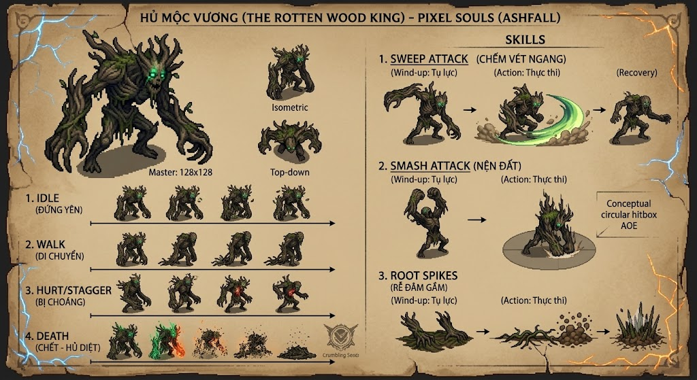

Hủ Mộc Vương: Boss Đầu Tiên Của Ashfall Khó Ra Sao?

Khi bắt đầu hành trình trong Ashfall, điều đầu tiên bạn sẽ gặp không phải là một kẻ thù bình thường — mà là Hủ Mộc Vương, vị vua rừng đã sa ngã vào bóng tối. Không phải boss hút máu ngẫu nhiên, không phải một cuộc chiến quay cuồng. Mà là một bài tập về sự kiên nhẫn và đọc hiểu.
Tạo Hình: Một Vị Vua Đã Biến Dạng
Hủ Mộc Vương không được thiết kế để ghê sợ theo cách truyền thống. Nó là cái bóng của một vị vua — một silhouette xứng đôi với rừng sâu, nơi nó cai trị. Pixel art của boss được tỉ mỉ từng chi tiết:
- Hình thù xoắn vặn: Từng pixel được sắp xếp để gợi cảm giác một thứ gì đó không còn nguyên vẹn — các chi tiết cơ thể nó thay đổi khi nó di chuyển.
- Animations mượt mà: Mỗi hành động của boss đều được hand-drawn, giúp bạn đọc được ý định trước khi nó tấn công.
- Màu sắc hòa hợp: Việc boss tôi màu xanh-nâu từ rừng giúp nó không lạc lõng, mà còn tạo cảm giác nó là một phần của nơi này.
Nhưng đây không phải vấn đề. Vấn đề là cách nó chiến đấu.
Gameplay: Công Bằng Nhưng Không Tha Thứ
Hủ Mộc Vương được thiết kế xung quanh một triết lý đơn giản: nó sẽ báo trước mỗi cú đấu của nó.
Không có sát thương xảy ra từ hư không. Không có pattern invisible. Không có RNG. Mỗi cú tấn công của boss đều bắt đầu bằng một posture — tư thế cơ thể — mà bạn có thể nhận ra. Boss sẽ giữ tư thế đó trong một khung hình đủ lâu để bạn phản ứng.
Nhưng nếu bạn sai lần, boss sẽ không tha thứ. Vì đó là điểm của Ashfall — bạn không được quay lại bằng cách nâng cấp. Bạn quay lại bằng cách học.
⚔️ Vì Sao Hủ Mộc Vương Đặc Biệt?
Boss này không phải là test sức mạnh. Nó là test tâm lý — bạn có tin vào cách bạn đọc pattern? Bạn có dám bước vào khi boss tấn công, hay sẽ luôn bị sợ hãi làm mất timing?
Một Bước Đệm Hoàn Hảo
Hủ Mộc Vương không phải boss khó nhất trong Ashfall. Nhưng nó là boss dạy bạn cách chơi — nó buộc bạn phải bỏ đi những thói quen từ những game khác, và học cách đọc rhythm của một đối thủ.
Nó nói với bạn: "Kỹ năng chiến thắng. Không phải stats, không phải gear. Kỹ năng."
Sẵn Sàng Đối Mặt Với Vị Vua Rừng?
Hủ Mộc Vương đang chờ. Nhưng chỉ những người dám học mới sống sót.
Chơi Ashfall Ngay